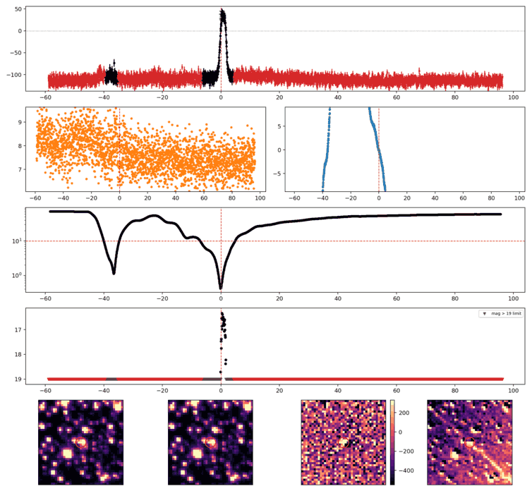
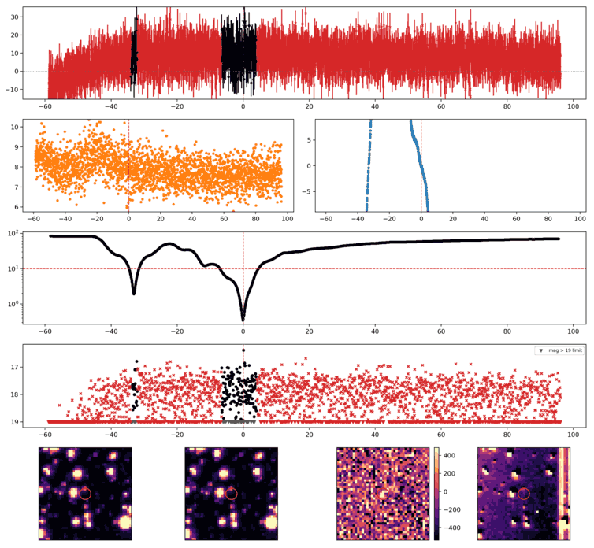
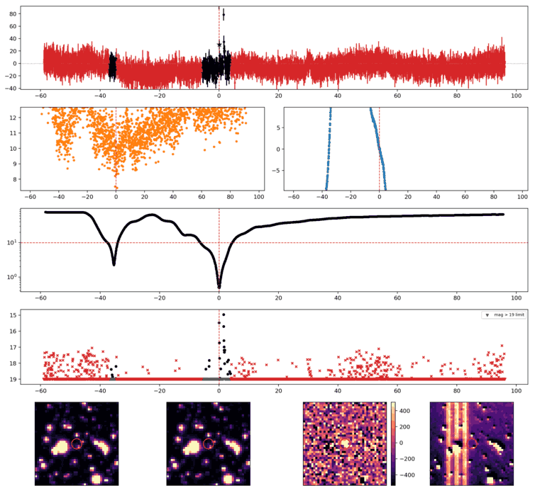
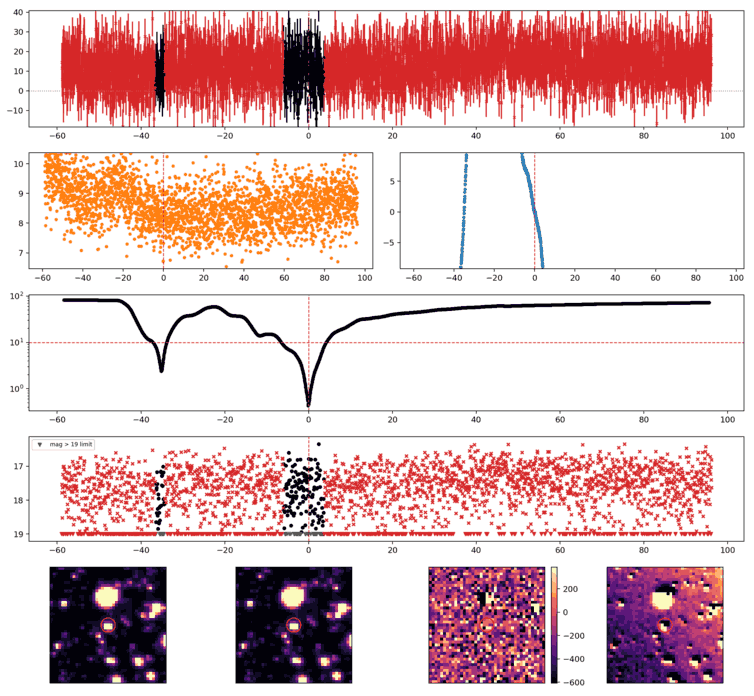

Search centered on refined position (7.7471077, +44.2182259 deg). Gaia coordinates are at J2016.0; proper motions are shown, without epoch propagation. A positional match does not change the candidate flags.
No Gaia DR3 sources found within 5 arcseconds.
Retrieved 2026-10-22T06:08:31.191158+00:00

Search centered on refined position (355.2233914, +42.0643582 deg). Gaia coordinates are at J2016.0; proper motions are shown, without epoch propagation. A positional match does not change the candidate flags.
No Gaia DR3 sources found within 5 arcseconds.
Retrieved 2026-10-22T06:08:31.938522+00:00

Search centered on refined position (355.0945099, +45.1063821 deg). Gaia coordinates are at J2016.0; proper motions are shown, without epoch propagation. A positional match does not change the candidate flags.
| Source ID / catalog entry | Separation (arcsec) | RA (deg) | Dec (deg) | G (mag) | BP (mag) | RP (mag) | Parallax ± error (mas) | PM RA* ± error (mas/yr) | PM Dec ± error (mas/yr) | RUWE | Variability |
|---|---|---|---|---|---|---|---|---|---|---|---|
| 1926756379488576384 | 1.790 | 355.0947773 | 45.1068421 | 17.335 | 19.351 | 16.009 | 11.232 ± 0.089 | 0.479 ± 0.072 | -40.016 ± 0.062 | 0.989 | NOT_AVAILABLE |
Retrieved 2026-10-22T06:08:32.686627+00:00
Representative chosen by category, detection count, then Gaussian S/N. Original measurements and classifications are retained below.

Search centered on refined position (6.7154557, +47.0315501 deg). Gaia coordinates are at J2016.0; proper motions are shown, without epoch propagation. A positional match does not change the candidate flags.
No Gaia DR3 sources found within 5 arcseconds.
Retrieved 2026-10-22T06:08:33.446201+00:00